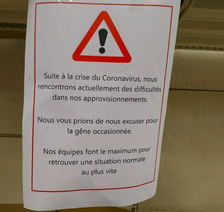

数说疫情0317：世卫呼吁更多检测，海外确诊已逾10万
原文链接 备份链接 “外防输入”已是当前疫情防控重中之重。海外累计确诊病例超过10万，世卫组织呼吁各国扩大监测范围。欧洲更多国家关闭边境 文 |《财经》数据研究员 徐进 图 |《财经》视觉中心 编辑 |** 郝洲** 一、北京重启小汤山 …
法国无法像中国一样一周建一所传染病医院。希望大家可以跨越国界共同携手渡过此次疫情难关！
文 | Yvonne
在法国学习生活已近八年，作为自由翻译的我平时主要通过公共交通活动于法兰西之岛（Île-de-France）地区（俗称大巴黎区，包括首都巴黎及周围郊区），这里是法国人口最密集的大区。据法国卫生部门3月23日发布的统计数据，法国累计确诊19856例，死亡病例升至860例；其中，疫情最严重的地区仍是大巴黎地区，确诊病例已升至6211例。

3月的法国街头
民众和政府之前太淡定了
其实，由于工作关系，在欧洲疫情暴发之前，我就已经感受到了此次新冠疫情对于法国的冲击了：因为中国人出不来了，我的口译工作量骤减到几乎为零。
这次新冠疫情，法国的首例确诊是1月24日（中国除夕），病人是到法国的中国游客，这也是欧洲的首例确诊；2月15日，出现首例死亡。2月28日，法国进入防疫第二阶段（即“防止疫情扩散阶段”）。3月7日，确诊破千。
但是民众一直都很淡定，政府部门也很淡定。大家都该去哪去哪，该干嘛干嘛。3月8日各地还组织了各种争取妇女平权的游行集会。除了在一些医疗卫生场所（医院、诊所、化验实验室）张贴了新冠疫情告知和个人卫生（洗手）指导之外，几乎没有什么特别的措施。

市政公告栏的个人卫生宣传
浪费了8天黄金时间
直到3月初，意大利的陷落及其医疗体系的崩溃终于给欧洲各国敲响了警钟。担心成为下一个意大利，法国在3月12日突然开始发力抓紧防疫了。因为法国的疫情曲线较意大利的晚8天，法国政府希望抓住这8天的黄金时间。
当晚，法国总统马克龙宣布3月16日起全国封校直至新的命令。3月14日晚，总统宣布关闭所有非民生必需（食品、药品）的公共场所；16日晚，总统宣布自17日中午12点起实行居家隔离，派出宪兵和警察维持秩序。
3月16日晚，所有在法人员的手机都收到了居家隔离的通知
民众凭证明（自己填写）出行，不符合允许条件的出行将被处以罚款。（虽然目前的执行力度与人们预想的有差异，基本靠大家自觉……）
这时，从政府到民众都有了紧张感。3月时值法国市长选举（3月15日举行了第一轮投票），各党派纷纷站台呼吁政府推迟第二轮投票。人们开始囤积必需品，导致超市的卫生纸、面粉、意面、罐头等产品脱销。但除了个别地区出现一些反对政府采取“战争状态措施”的冲突以外，社会上没有出现太大的恐慌现象。

超市意面货架

巴黎超市断货公告
很快，全法国开始关注医疗系统的承受能力以及如何获得救治的问题。虽然检测费用从之前的100多欧元降至50多欧元，且基本医疗保险报销60%（剩下的可由商业保险报销），但是要做检测并不容易。一来新冠的取样化验并非所有化验实验室都有资质操作，目前只有医院的化验室可做；二来也不是所有疑似患者都可以要求做检测。只有症状严重以及属于高危高并发人群的疑似者在急救中心（SAMU）和传染病专家的认可下，可进行检测。
此外，即使得到了检测也不一定能得到适当的救治。法国无法像中国一样一周建一所传染病医院。每千人拥有七个床位的法国（2013数据），面对这次疫情暴发，只能收治重症患者（每10万人拥有11.6张重症监护床位），确诊的轻症患者只能在家隔离得不到治疗；即便如此，医疗系统还是将呈现饱和，未来可能面临必须在重症患者中做选择的压力。
作为自由翻译，我可能又有新“工作”了
对于法国疫情，我本人倒并没有太担心害怕。也可能是因为我从一开始就关注新冠疫情的缘故吧。而且，相对于国内城市，法国（除巴黎）的人口密度较低，所以个人防护相对较容易。
至于疫情对生活的影响，我个人觉得因为在法国的生活原本就不如在国内的生活丰富，所以开始采取严厉措施后的落差不是很大。
当然，我以及周边的朋友或多或少都遇到过非暴力的歧视事件，比如路人对华人喊“中国人，新冠病毒”等。
其实，歧视程度跟地区人口组成有很大关系。我所在的省主要都是移民，以穆斯林、北非、东欧人为主，所以对于华人的歧视是相对比较小的。我在法国就交了一些当地的朋友，他们对我也十分友善。
最近我听说，因为医学词汇相对较难，一些华人在法国就医遇到问题。在条件允许的情况下，我愿意帮助在法国的中国人，以尽绵薄之力。
希望大家可以跨越国界共同携手渡过此次疫情难关！


· 口述实录 | 中国援外抗疫包机MU7041机长：加油，意大利！请照顾好我们的医生
· 我在海外 | 美国社区还基本正常，我不回去给中国造成负担
新民周刊所有平台稿件， 未经正式授权
一律不得转载、出版、改编或进行
与新民周刊版权相关的其他行为，违者必究


原文链接 备份链接 “外防输入”已是当前疫情防控重中之重。海外累计确诊病例超过10万，世卫组织呼吁各国扩大监测范围。欧洲更多国家关闭边境 文 |《财经》数据研究员 徐进 图 |《财经》视觉中心 编辑 |** 郝洲** 一、北京重启小汤山 …
原文链接 备份链接 中国现有确诊病例已降至1万以下。国内已采取最严密的入境防疫检测措施。美国继续在快车道上狂奔，但基本防疫措施已经得到重视和加强 文丨《财经》数据研究员 徐进 图丨《财经》视觉中心 编辑丨郝洲 一、境外输入病例北京居首， …
原文链接 备份链接 图片来源：印度《电讯报》 记者：肖恩 “ 人口密度大、加上相对紧张的医疗资源，是印度始终面临疫情高风险的主要原因。 ” 尽管确诊病例在世界范围尚属“少数”，拥有13亿人口的印度也进入抗疫“冲刺”模式。 根据印度卫生和家 …
原文链接 备份链接 国内多地周一重现早高峰。国际奥组委确认正式考虑延期举办东京奥运会。疫情令美国经济处在悬崖边缘。意大利对中国专家组的建议照单全收。 文 |《财经》数据研究员 徐进 图 |《财经》视觉中心 编辑 | 郝洲 一、国内多地 …
原文链接 备份链接 截至北京时间3月22日12时，除中国外，184个国家和地区累计确诊222707例新冠肺炎，“钻石公主”号邮轮712例。 当前，欧美疫情仍旧快速蔓延。其中，意大利病例突破5万例，总理孔特要求全国停止所有非必要的生产活 …